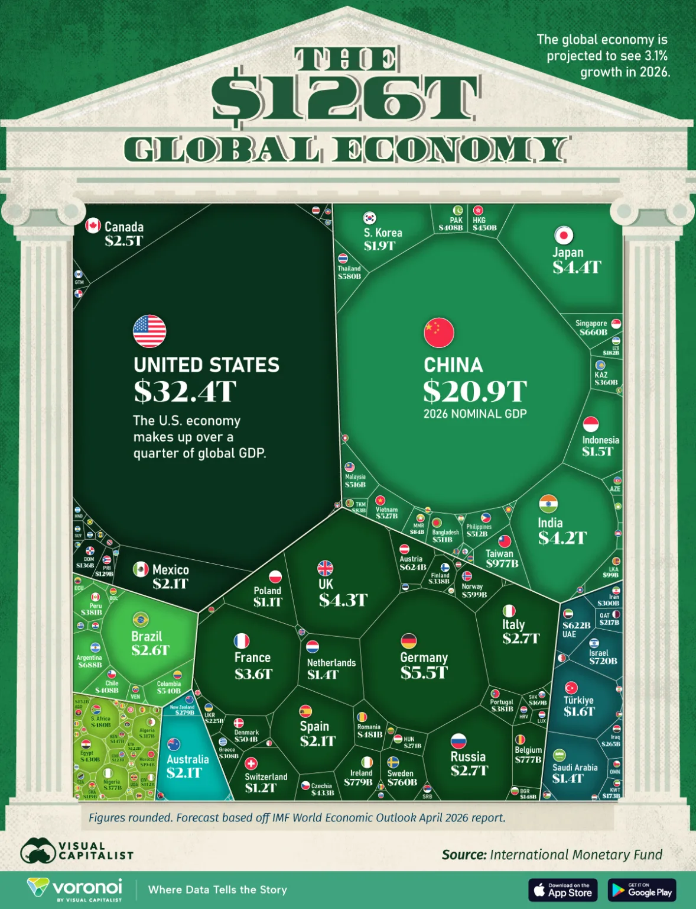
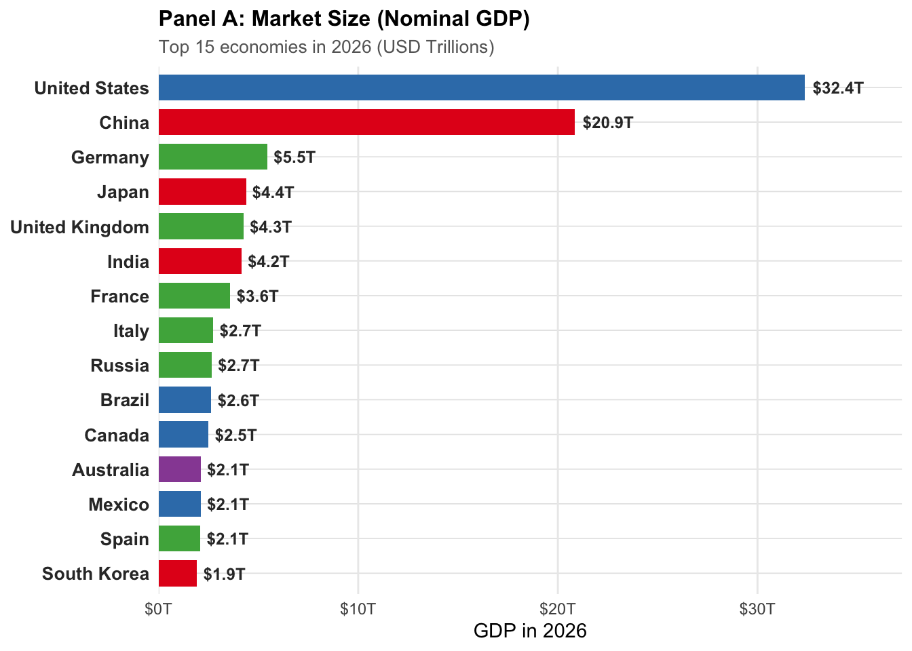
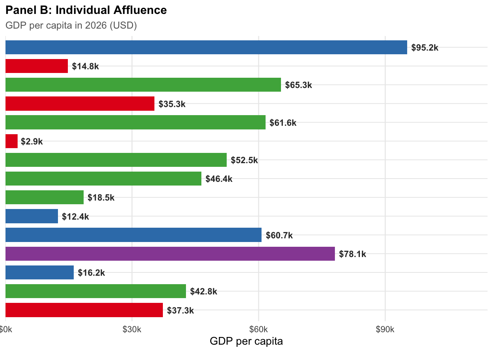
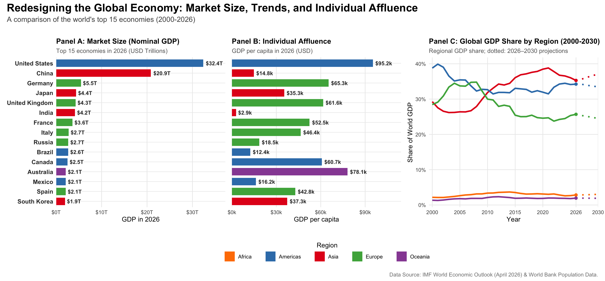

Code
library(tidyverse)
library(readxl)
library(countrycode)
library(scales)CSC3107 Information Visualization · Team Poster Project
This visualization compares the world’s top 15 economies by:
Data sources: IMF World Economic Outlook (April 2026) and World Bank.
Output: Combined multi-panel figure saved as gdp_redesign.png.
The original graphic (Visual Capitalist, The $126T Global Economy in One Chart) is a single-year 2026 treemap. The article claims that economic weight is shifting toward Asia, but a one-year snapshot is structurally incapable of showing change. The chart asserts a trend it cannot draw.

Our redesign, answers three questions the original cannot:
NGDPD (GDP, current prices, USD billions), exported from the IMF DataMapper as data/imf-dm-export-20260624.xls.SP.POP.TOTL, supplied as data/pop_raw.csv and merged to derive GDP per capita.This redesign is intended for economic and trade-policy analysts prioritizing global markets and trade partnerships. The goal is to clearly rank and compare the total absolute market size of individual economies for the year 2026. In addition, it also aims to show that the economic weight is shifting towards Asia since 2000.
library(tidyverse)
library(readxl)
library(countrycode)
library(scales)raw <- read_excel("data/imf-dm-export-20260624.xls") |>
rename(entity = 1) # first column holds the economy/aggregate names
dim(raw)[1] 389 54The export lists the individual economies first (Afghanistan → Zimbabwe), followed by regional and analytical aggregates (Africa, Advanced economies, G-20, …, World) and a ©IMF, 2026 footer. Summing the whole column double-counts (it reaches ~$374T), so we keep only individual economies, via two defensive steps: (1) cut the table at the first aggregate row (Africa); (2) validate every remaining name against ISO-3 with countrycode(), dropping anything that does not resolve.
# (1) cut at the first regional aggregate -> individual-economy block
first_agg <- which(raw$entity == "Africa")[1]
econ <- raw |>
slice(1:(first_agg - 1)) |>
filter(!is.na(entity)) |>
select(-any_of("Estimates start after"))
# (2) wide -> long over the year columns; parse "no data" -> NA; drop missing
year_cols <- names(econ)[str_detect(names(econ), "^[0-9]{4}$")]
long <- econ |>
pivot_longer(
all_of(year_cols),
names_to = "year",
values_to = "gdp_usd_bn"
) |>
mutate(
year = as.integer(year),
gdp_usd_bn = parse_number(na_if(as.character(gdp_usd_bn), "no data"))
) |>
filter(!is.na(gdp_usd_bn))
# (3) standardise to ISO-3 + UN-M49 region; non-countries -> NA iso3 -> dropped.
# custom_match covers IMF spellings countrycode can miss.
custom <- c(
"Türkiye, Republic of" = "TUR",
"Kosovo" = "XKX",
"Micronesia, Fed. States of" = "FSM",
"Lao P.D.R." = "LAO"
)
long <- long |>
mutate(
iso3 = countrycode(
entity,
"country.name",
"iso3c",
custom_match = custom,
warn = FALSE
),
country = countrycode(iso3, "iso3c", "country.name", warn = FALSE),
region = countrycode(iso3, "iso3c", "continent", warn = FALSE) # Africa/Americas/Asia/Europe/Oceania
) |>
filter(!is.na(iso3))
# (4) unit transformation: billions -> trillions (one consistent unit)
long <- long |> mutate(gdp_usd_tn = gdp_usd_bn / 1000)
n_distinct(long$iso3) # economies retained[1] 197dir.create("data", showWarnings = FALSE)
# tidy long form (all years) — the canonical cleaned dataset
gdp_long <- long |>
select(iso3, country, region, year, gdp_usd_bn, gdp_usd_tn) |>
arrange(country, year)
write_csv(gdp_long, "data/gdp_clean_long.csv")
# 2026 snapshot used by the redesign
gdp_2026 <- gdp_long |>
filter(year == 2026) |>
select(-year) |>
arrange(desc(gdp_usd_tn))
write_csv(gdp_2026, "data/gdp_clean_2026.csv")
# sanity check: 2026 country total should approximate the IMF "World" row (~$126.3T)
sprintf(
"2026 economies: %d | total: $%.1fT (IMF World = $126.3T)",
nrow(gdp_2026),
sum(gdp_2026$gdp_usd_tn)
)[1] "2026 economies: 190 | total: $125.7T (IMF World = $126.3T)"The IMF file is GDP only, so population is joined from the included raw World Bank indicator SP.POP.TOTL file (data/pop_raw.csv) to derive GDP per capita. Using the submitted raw file makes the complete render reproducible without an internet connection. Because 2026 population is not yet available, the calculation uses the latest non-missing population observation and retains its year for transparency.
pop <- read_csv("data/pop_raw.csv", show_col_types = FALSE) |>
filter(!is.na(population)) |>
filter(!is.na(iso3c)) |>
group_by(iso3c) |>
slice_max(year, n = 1, with_ties = FALSE) |>
ungroup() |>
transmute(iso3 = iso3c, population_year = year, population)
gdp_2026_pc <- gdp_2026 |>
left_join(pop, by = "iso3") |>
mutate(gdp_per_capita = gdp_usd_tn * 1e12 / population)
write_csv(gdp_2026_pc, "data/gdp_2026_with_percapita.csv")
gdp_2026_pc |> slice_max(gdp_usd_tn, n = 8)library(tidyverse)
library(scales)
library(patchwork)
theme_set(theme_minimal(base_size = 12))# Data Loading
gdp_2026_pc <- read_csv(
"data/gdp_2026_with_percapita.csv",
show_col_types = FALSE
)
gdp_long <- read_csv("data/gdp_clean_long.csv", show_col_types = FALSE)
# Color Palette (ColorBrewer Set1)
region_pal <- brewer_pal(palette = "Set1")
region_colors <- setNames(
region_pal(5),
c("Asia", "Americas", "Europe", "Oceania", "Africa")
)
# Top 15 economies by total GDP, ordered for plotting
top_15 <- gdp_2026_pc |>
slice_max(gdp_usd_tn, n = 15) |>
mutate(country = fct_reorder(country, gdp_usd_tn)) |>
mutate(region = factor(region, levels = names(region_colors)))
# Regional GDP share over time (2000–2030)
regional_trend <- gdp_long |>
filter(!is.na(region), year >= 2000, year <= 2030) |>
group_by(year, region) |>
summarize(gdp_usd_tn = sum(gdp_usd_tn), .groups = "drop_last") |>
mutate(share = gdp_usd_tn / sum(gdp_usd_tn))
# Order regions by 2026 GDP (largest first)
region_order <- regional_trend |>
filter(year == 2026) |>
arrange(desc(gdp_usd_tn)) |>
pull(region)
regional_trend <- regional_trend |>
mutate(region = factor(region, levels = region_order))The United States and China dominate the global landscape, together accounting for nearly half of the top 15’s total output. While the US maintains the top position at $32.4T, China follows closely at $20.9T, with a significant drop-off to the next tier of economies like Germany and Japan.
plot_a <- ggplot(top_15, aes(x = gdp_usd_tn, y = country, fill = region)) +
geom_col(width = 0.75, show.legend = FALSE) +
geom_text(
aes(label = sprintf("$%.1fT", gdp_usd_tn)),
hjust = -0.15,
color = "gray20",
fontface = "bold",
size = 3.2
) +
scale_x_continuous(
expand = expansion(mult = c(0, 0.15)),
labels = label_dollar(suffix = "T")
) +
scale_fill_manual(values = region_colors) +
labs(
title = "Panel A: Market Size (Nominal GDP)",
subtitle = "Top 15 economies in 2026 (USD Trillions)",
x = "GDP in 2026",
y = NULL
) +
theme_minimal(base_size = 11) +
theme(
panel.grid.major.y = element_line(color = "gray90", linewidth = 0.3),
panel.grid.minor = element_blank(),
plot.title = element_text(face = "bold", size = 12),
plot.subtitle = element_text(color = "gray40", size = 10),
axis.text.y = element_text(face = "bold", color = "gray20", size = 10)
)
plot_a
Contrasting market size with individual affluence reveals a sharp divide. While the US and European nations maintain high GDP per capita (prosperity), the emerging giants China and India show significantly lower per-capita figures. This highlights that massive market scale does not yet equate to the same level of individual wealth found in established advanced economies.
plot_b_affluence <- ggplot(
top_15,
aes(x = gdp_per_capita, y = country, fill = region)
) +
geom_col(width = 0.75, show.legend = FALSE) +
geom_text(
aes(label = sprintf("$%.1fk", gdp_per_capita / 1000)),
hjust = -0.15,
color = "gray20",
fontface = "bold",
size = 3.2
) +
scale_x_continuous(
expand = expansion(mult = c(0, 0.2)),
labels = label_dollar(scale = 0.001, suffix = "k")
) +
scale_fill_manual(values = region_colors) +
labs(
title = "Panel B: Individual Affluence",
subtitle = "GDP per capita in 2026 (USD)",
x = "GDP per capita",
y = NULL
) +
theme_minimal(base_size = 11) +
theme(
panel.grid.major.y = element_line(color = "gray90", linewidth = 0.3),
panel.grid.minor = element_blank(),
plot.title = element_text(face = "bold", size = 12),
plot.subtitle = element_text(color = "gray40", size = 10),
axis.text.y = element_blank()
)
plot_b_affluence
The final figure combines all insights into a single unified dashboard, facilitating multi-dimensional analysis of global economic power.
# Legend plot (one row per region for the legend keys)
legend_data <- tibble(region = names(region_colors))
region_legend <- ggplot(legend_data, aes(x = 1, y = 1, fill = region)) +
geom_tile(alpha = 0) +
scale_fill_manual(values = region_colors, drop = FALSE) +
guides(
fill = guide_legend(
nrow = 1,
title = "Region",
title.position = "top",
override.aes = list(alpha = 1)
)
) +
theme_void() +
theme(
legend.position = "bottom",
legend.key.spacing.x = unit(0.8, "cm"),
legend.title = element_text(hjust = 0.5),
legend.margin = margin(t = 3, b = 3),
plot.margin = margin(0, 0, 0, 0)
)
combined_plot <- plot_a +
plot_b_affluence +
plot_c_trends +
region_legend +
plot_layout(
design = "
AAABBBCCC
AAABBBCCC
##DDDDD##
",
heights = c(1, 1, 0.14)
) +
plot_annotation(
title = "Redesigning the Global Economy: Market Size, Trends, and Individual Affluence",
subtitle = "A comparison of the world's top 15 economies (2000-2026)",
caption = "Data Source: IMF World Economic Outlook (April 2026) & World Bank Population Data.",
theme = theme(
plot.title = element_text(
size = 18,
face = "bold",
hjust = 0,
margin = margin(b = 5)
),
plot.subtitle = element_text(
size = 12,
hjust = 0,
color = "gray30",
margin = margin(b = 20)
),
plot.caption = element_text(
size = 9,
color = "gray50",
margin = margin(t = 15)
)
)
)
ggsave("gdp_redesign.png", combined_plot, width = 14, height = 6.5, dpi = 300)
combined_plot